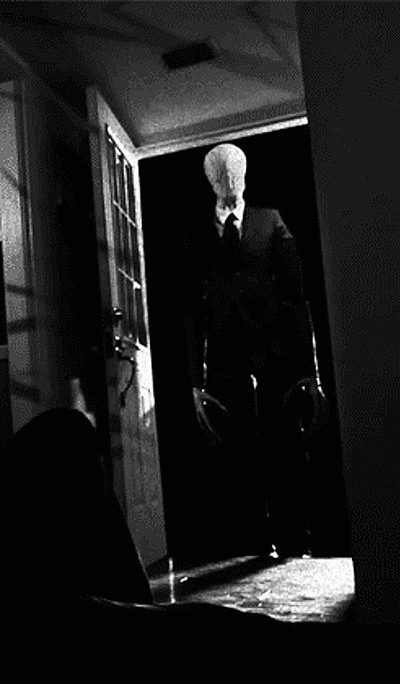

Slender
O Slender Man é um homem com seus braços e pernas extremamente longos. Ele também parece ter 4 ou 8 tentáculos negros que se projetam a partir das suas costas.
Ele é descrito como vestindo um terno preto muito semelhante ao rosto dos notórios “Homens de Preto”, e como o nome sugere, ele é capaz de esticar seus membros de forma desumana a fim de induzir o medo e seduzir a sua presa. Uma vez que seus braços são estendidos, suas vítimas são colocadas em uma espécie de estado hipnótico, onde eles ficam totalmente imponentes, ficando imóveis e a mercê da tal criatura.
Ele é descrito como vestindo um terno preto muito semelhante ao rosto dos notórios “Homens de Preto”, e como o nome sugere, ele é capaz de esticar seus membros de forma desumana a fim de induzir o medo e seduzir a sua presa. Uma vez que seus braços são estendidos, suas vítimas são colocadas em uma espécie de estado hipnótico, onde eles ficam totalmente imponentes, ficando imóveis e a mercê da tal criatura.
Ele é descrito como vestindo um terno preto muito semelhante ao rosto dos notórios “Homens de Preto”, e como o nome sugere, ele é capaz de esticar seus membros de forma desumana a fim de induzir o medo e seduzir a sua presa.
Uma vez que seus braços são estendidos, suas vítimas são colocadas em uma espécie de estado hipnótico, onde eles ficam totalmente imponentes, ficando imóveis e a mercê da tal criatura.
Ele também é capaz de criar tentáculos de seus dedos e nas costas que ele usa para andar de uma forma semelhante ao Doutor Octopus. Essa capacidade sobre-humana também poderia ser vista como uma semelhança com o Sr. Fantástico.
Se ele absorve, mata, ou se leva as suas vítimas para um local desconhecido outra dimensão também é desconhecido, como nunca há quaisquer órgãos ou provas deixadas.

Seu rosto é pálido e um pouco fantasmagórico, e quase parece ter sido envolvido em um tipo de pano. Suas características faciais também são objeto de debate, e muitas pessoas acreditam que o seu rosto varia de pessoa para pessoa.
Ele às vezes é retratado usando um chapéu, até mesmo algumas vezes usando cartola. Também pode ser visto vestindo uma gravata ou um lenço longo, que é vermelho ou cinza. Os sapatos que ele usa são negros, que sempre brilham perfeitamente.